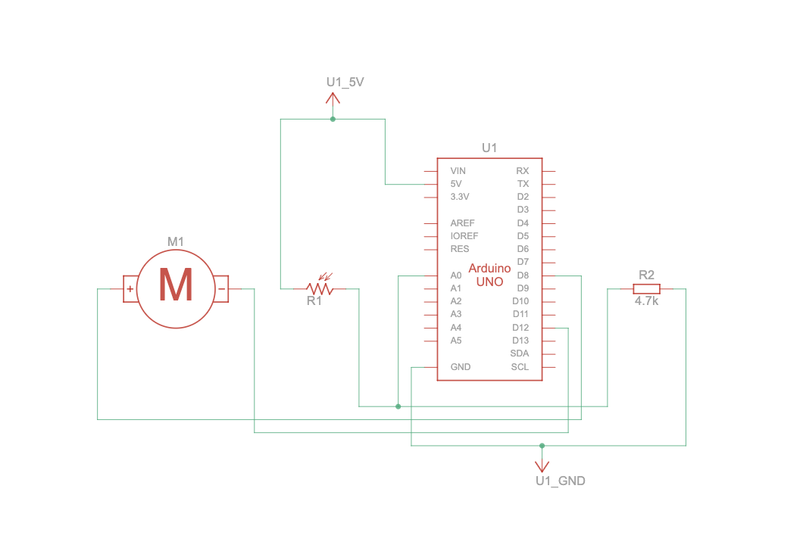
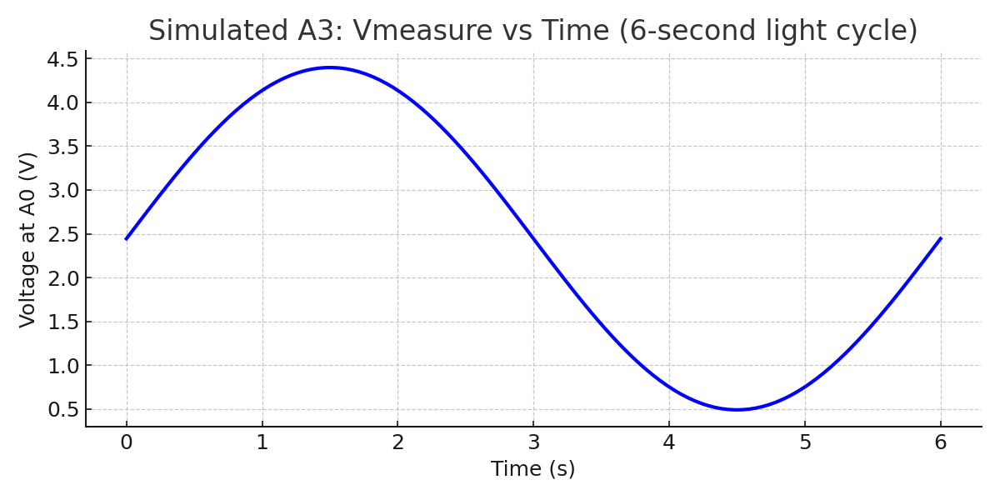

Overview
This project demonstrates input–output control using a photoresistor (light sensor) and a DC fan. The sensor forms a voltage divider connected to A0, providing analog readings that vary with light intensity. These readings are mapped to control the fan’s behavior through PWM signals. The documentation includes the schematic, circuit photo, code, operation GIF, Serial Monitor data, voltage calculations, and responses to the required questions.
Schematic (show values & calculation)

This schematic shows the light sensor circuit for A3. The photoresistor (LDR) and a 4.7 kΩ resistor form a voltage divider feeding A0 on the Arduino. As light intensity increases, the LDR resistance decreases and the voltage at A0 rises.
Voltage calculations:
- Dark (~100 kΩ): Vout ≈ 5 × (4.7 k / (100 k + 4.7 k)) ≈ 0.22 V (ADC ≈ 45)
- Medium (~10 kΩ): Vout ≈ 5 × (4.7 k / (10 k + 4.7 k)) ≈ 1.6 V (ADC ≈ 327)
- Bright (~1 kΩ): Vout ≈ 5 × (4.7 k / (1 k + 4.7 k)) ≈ 4.1 V (ADC ≈ 838)
These approximate voltages correspond to expected analog readings from about 45 → 838, which are mapped to fan output levels in the firmware code.
Breadboard Circuit
This is my A3 circuit: a photoresistor (light sensor) connected as a voltage divider into A0, and a DC fan connected to digital pins 8 and 12 for direction control. As light increases, the LDR’s resistance drops, increasing A0 voltage and triggering the fan to spin. The wiring matches the schematic and shares a common ground with the Arduino.
Firmware Code
// Sensor: LDR (photoresistor) in a voltage divider
// Output: Fan controlled by two digital pins (8 and 12)
// Create a variable to store the sensor reading from A0
int sensorValue = 0;
// Variable placeholders
int voltage;
int timer = millis(); // holds startup time, not used directly
void setup()
{
// Set A0 as an input to read the voltage divider from the LDR
pinMode(A0, INPUT);
// Start Serial Monitor at 9600 baud for logging and screenshots
Serial.begin(9600);
// Configure D9 as a PWM output (for test LED brightness)
pinMode(9, OUTPUT);
// Configure fan control pins (8 and 12) as outputs
pinMode(12, OUTPUT);
pinMode(8, OUTPUT);
// Ensure the fan is stopped when the Arduino first powers up
digitalWrite(8, LOW);
digitalWrite(12, LOW);
}
void loop()
{
// Read the analog value (0–1023) from the LDR voltage divider
sensorValue = analogRead(A0);
// Print the sensor value with a unique label for Serial Monitor
Serial.print("LDR=");
Serial.println(sensorValue);
// Map the 10-bit sensor range (0–1023) to 8-bit PWM (0–255)
// This controls the brightness of the LED on D9
analogWrite(9, map(sensorValue, 0, 1023, 0, 255));
// If light is above threshold (~200), spin fan in reverse direction
if (sensorValue > 200){
// Drive D12 HIGH and D8 LOW to reverse motor polarity
digitalWrite(8, LOW); // one side of the motor LOW
digitalWrite(12, HIGH); // the other side HIGH
}
// Otherwise, keep both pins LOW so the fan stays off
else{
// Set both control pins LOW to stop the fan
digitalWrite(8, LOW);
digitalWrite(12, LOW);
}
// Short delay (100 ms) to stabilize readings and Serial output
delay(100);
}
Operation GIF & Serial Screenshot

This GIF shows the A3 circuit in action: when light increases on the photoresistor, the fan activates and spins, and when it’s darker, the fan stops.
Graph

Additional Questions (A3)
-
1) In your voltage divider, can the variable resistor be either R1 or R2?
The variable resistor in a voltage divider can be placed on the top or bottom depending on whether you want the output voltage to rise or fall with light. The math stays the same, only the polarity flips. With the LDR on top (to 5V), more light lowers its resistance and raises the output voltage; on the bottom (to GND), more light lowers the voltage.
-
3) If PWM were 10‑bit and ADC 16‑bit, how would map() change?
If PWM were 10-bit and ADC 16-bit, the map function would scale to map(raw16, 0, 65535, 0, 1023). The higher resolution would make the output smoother and more precise.
Reflection
This project went smoothly once I confirmed the wiring and threshold values for the light sensor. The fan response worked as expected after minor adjustments to the resistor value and code threshold. Testing and documenting the circuit helped me better understand how analog inputs map to PWM outputs. Next time, I would refine the physical layout and explore variable fan speeds for smoother control.
AI Use Statement
I used AI tools to help create and visualize my data, as well as format this webpage. AI was used to simulate the voltage-versus-time graph based on realistic sensor behavior, and to organize my HTML sections with consistent structure, captions, and concise explanations. This support helped me clearly present how the light sensor input controlled the fan output in my A3 project.